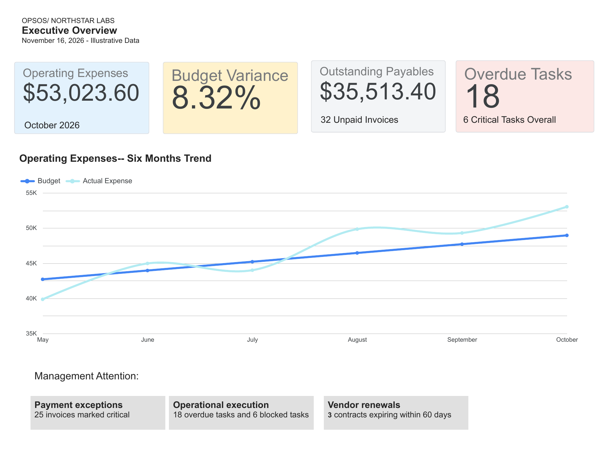
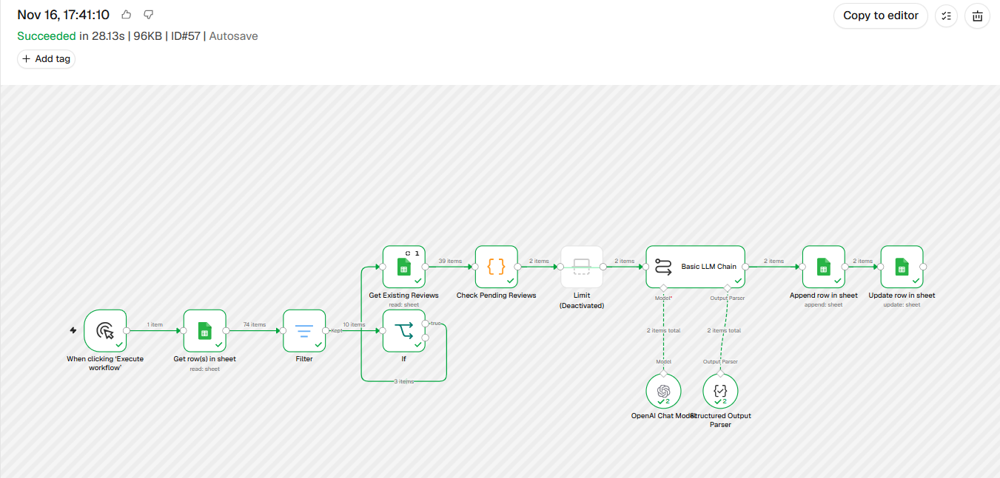
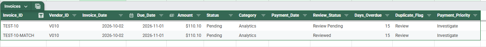
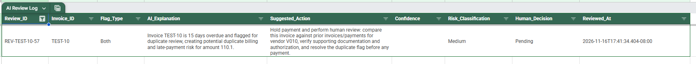

OpsOS | From invoice exceptions to executive reporting
I built OpsOS for Northstar Labs, a fictional 15-person startup, to answer two questions: what needs leadership’s attention, and what should the team verify before acting?
Make the priorities visible
I used Google Sheets and Looker Studio to bring budget variance, payables, overdue tasks, and vendor renewals into one executive view, with separate pages for the underlying details.

Flag the exception. Leave the decision with a person.
In test case TEST-10, a $110.10 invoice was 15 days overdue and matched another invoice’s vendor, invoice date, and amount. n8n routed it to AI, logged both concerns, and moved the invoice to Review Pending. The recommendation was to verify the records and resolve the potential duplicate before payment.





Turn operating data into a brief leadership can act on
Google Sheets calculates the metrics. An on-demand n8n workflow uses AI to draft a one-page executive brief, then saves it to Google Docs for review. The sample separates the financial reporting month from the current operational snapshot. Nothing is emailed automatically.
View the generated executive brief (PDF)What I tested and what the system doesn’t do
Verified in synthetic tests
All 20 planned invoice cases matched expected behavior, including overdue thresholds, review logging, and invoice status updates. Rerunning the same test data did not create a second pending review.
Limits of the prototype
A field match is only a lead. A missing due date or a large amount alone does not trigger review. The workflow does not approve or pay invoices, and the test pass rate is not a measure of production detection accuracy.
Includes the 20 synthetic invoice cases, three executive-brief checks, and one manual error check.
Download the sample workbook (Excel)Explore the synthetic invoice, vendor, budget, and task data behind the dashboard.